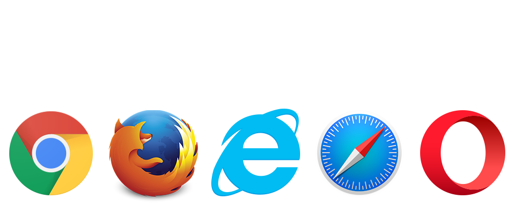

Outdated Browser
Для комфортной работы в Сети нужен современный браузер. Здесь можно найти последние версии.
Outdated Browser
В вашем браузере отключён JavaScript. Включите его для более комфортной работы в Сети.
Outdated Browser
Этот сайт предназначен для компьютеров, но
вы можете свободно пользоваться им.
60.9% людей использует
этот браузер
GOOGLE CHROME
СКАЧАТЬ
ВЕРСИЯ 52
ДОСТУПНО ДЛЯ
- Windows
- Mac OS
- Linux
15.9% людей использует
этот браузер
MOZILLA FIREFOX
СКАЧАТЬ
ВЕРСИЯ 48
ДОСТУПНО ДЛЯ
- Windows
- Mac OS
- Linux
4.8% людей использует
этот браузер
APPLE SAFARI
ДОСТУПНО ДЛЯ
- Mac OS